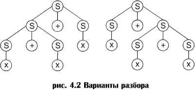

Неоднозначные грамматики.
Неоднозначные грамматики. В большинстве случаев левосторонний и правосторонний разборы и синтаксическое дерево являются уникальными. Однако для грамматики с порождающими правилами:
S ® S+S | x
предложение x + x + x имеет два синтаксических дерева (рис. 4.2) и два левосторонних (и правосторонних) разбора:

|
S Þ S + S |
S Þ S + S |
|
Þ S + S + S |
Þ x + S |
|
Þ x + S + S |
Þ x + S + S |
|
Þ x + x + S |
Þ x + x + S |
|
Þ x + x + x |
Þ x + x + x |
Если какое-либо предложение, генерированное грамматикой, имеет более одного дерева разбора, о такой грамматике говорят, что она неоднозначна. Эквивалентное условие заключается в том, что предложение должно иметь более одного левостороннего или правостороннего разбора. Задача установления неоднозначности грамматики является, в общем случае, неразрешимой, т.е. не существует универсального алгоритма, который принимал бы на входе любую грамматику и определял бы, однозначна она или нет. Некоторые неоднозначные грамматики можно преобразовать в однозначные, генерирующие тот же язык. Например, грамматика с порождающими правилами
S ® x | S + x
является однозначной и генерирует тот же язык, что и рассмотренная ранее неоднозначная грамматика.
Методы разбора обычно бывают нисходящими, т.е. начинают с начального символа и идут к предложению, или восходящими, т.е. начинают с предложения и идут к начальному символу.
Отказ от решения в разборе называют возвратом. Методы разбора могут быть недетерминированными и детерминированными в зависимости от того, возможен возврат или нет. Недетерминированные методы разбора весьма дорогие с точки зрения памяти и времени и крайне затрудняют включение в синтаксический разбор анализатор действий, выполняемых во время компиляции, результаты которых позднее должны быть аннулированы (например, построение таблицы символов и т.п.). В дальнейшем мы будем рассматривать лишь детерминированные методы разбора. Основное внимание в настоящем учебном пособии уделено методам нисходящего разбора, они же используются в лабораторных работах и при курсовом проектировании. Методы восходящего разбора рассмотрены в отдельной главе.